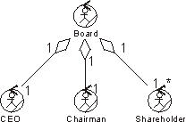

| Рекомендация: Aggregation in the Business Analysis Model |
 |
|
| Связанные элементы |
|---|
ExplanationSometimes a group of people act as a single unit in a use case, or, more generally, a phenomenon is composed of other independent phenomena. For example, School Class consists of Students. Such a phenomenon is called an aggregate. Aggregates are modeled with a separate class for the composite phenomenon. Such classes have aggregations to the classes that represent its constituents. This construction makes it possible to both refer to the components individually and handle them as a single unit. The uniting class does not necessarily have many properties of its own. Its essential characteristic may very well be the aggregations of the different components. Example:
 An aggregate class holds other classes together. See also Guideline: Aggregation for more general information. UseYou should use aggregates only if they are necessary; that is, if both the aggregate and any of its constituents are supposed to act or be useful on their own. A good aggregate is a natural, coherent part of a business analysis model-its meaning should be easy to understand from the context. Aggregations should only be used with classes representing the same kind of phenomenon. For example, it does not make sense for a business entity to be an aggregate of business workers. |
© Copyright IBM Corp. 1987, 2006. Все права защищены.. |